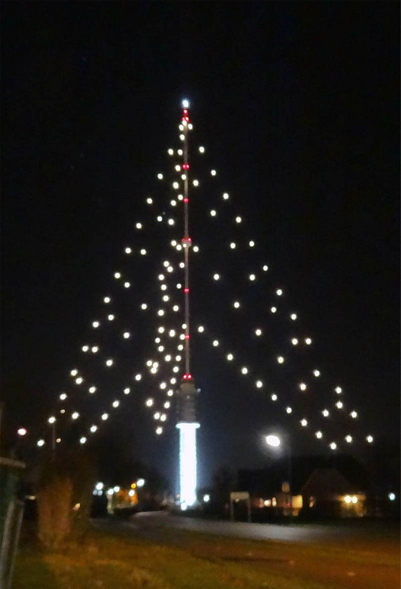
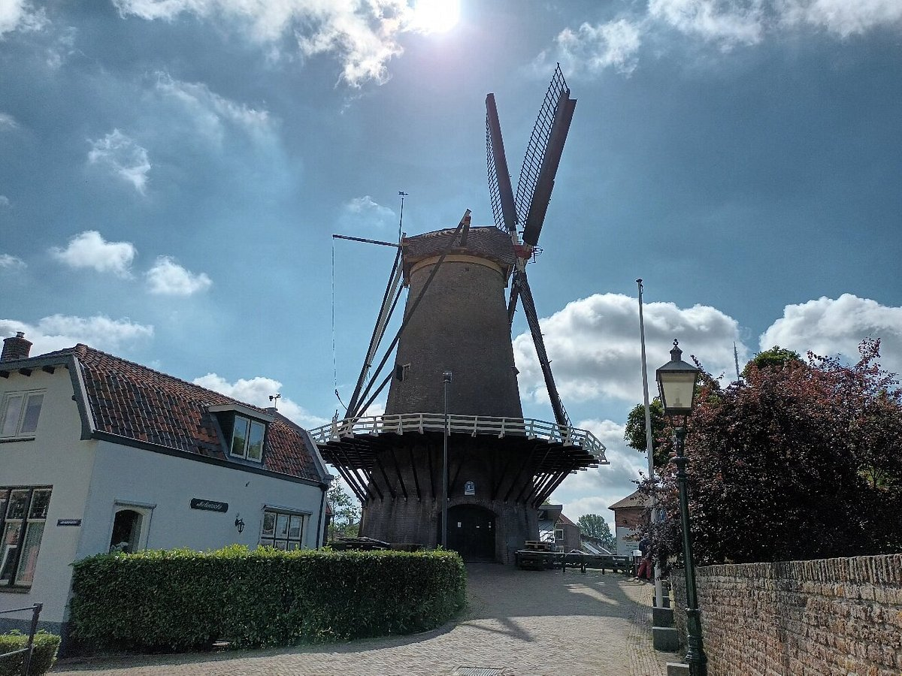

De Gerbrandytoren, ook wel bekend als Zendmast Lopik, is een straalverbindingstoren met zendmast in het Nederlandse IJsselstein voor FM-radio- en televisie-uitzendingen, telecommunicatie en dataopslag. De eerste televisiezender werd op 17 januari 1961 in gebruik genomen.
Deze 372 m hoge toren was vroeger een zendmast in het bijzonder voor korte en middellange golfzenders. De locatie van deze toren is in Ijsselstein, maar het is meer beroemd onder de naam "de toren van Lopik". Elk jaar verandert deze mast met de kersttijd in een gigantische kerstboom, zelfs de grootste kerstboom van Nederland. Je kunt deze toren van een afstand bekijken als je op de snelweg A2, A12 en A27 staat.
De Windotter is de naam van de ronde stenen wal- en stellingmolen die in 1732 in IJsselstein, provincie Utrecht, is gebouwd. De molen staat op de zuidwestzijde van de stadswal van IJsselstein. De molen was van oorsprong een dwangmolen, een molen waar de boeren uit de omgeving verplicht waren hun graan te laten malen.
Deze stenen stellingmolen was de vervanging van een oude houten standerdmolen die te bouwvallig geworden was. Die molen, vermoedelijk gebouwd tussen 1635 en 1640, had ook al weer een voorganger gehad, die waarschijnlijk op dezelfde plaats stond. Volgens de bronnen was er omstreeks 1424 al sprake van een IJsselsteinse windmolen in een ordonnantie: “ … die steyger uuter wijntmolen aen die haven”. Ook moet er een rosmolen zijn geweest nabij het klooster O.L. Vrouwenberg in de Nieuwpoort, die volgens de kaart van Blaeu (Boxhorn) vóór 1632 zal zijn vervangen door een eigen windmolen op de wal. Op latere kaarten en prenten komt deze kloostermolen echter niet meer voor.